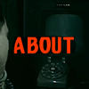
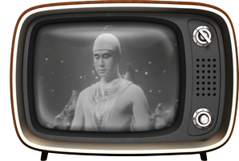

<div style="width:100%; text-align: center;" *ngIf="showMenu">
  <div class="retro-menu">
    <a routerLink="/home/chat"></a>
    <a href="/home/about"></a>
    
  </div>
</div>
<router-outlet></router-outlet>
<!-- Preload all of the below -->

<video src="../../../assets/chat/phone_call_final.mp4" hidden preload="auto" #phoneCallVid></video>
<audio src="../../../assets/chat/phone_ring.mp3" hidden preload="auto" #phoneRingMP3></audio>





